Restaurant operations app · SharePoint lists (Microsoft 365) · October 2026
32 entities: 31 lists + the Policies library. Generated from sharepoint-lists.json.
PK SharePoint item id FK lookup to another list UK unique (enforce unique values)
Types are SharePoint column types: Text, Note (multi-line), Number, Currency, Choice, MultiChoice, Date, DateTime, YesNo, Link, Lookup.
Lines (crow's foot): || exactly one · |o zero or one · o{ zero or many. Comments: required, indexed, set by flow (written only by Power Automate), key pattern.
The following types of personal data are processed (UK GDPR). Lawful basis and retention are to be confirmed:

Set up once and rarely changed: the restaurants, people, devices, food-safety limits, reason codes, delivery platforms and daily targets. Sites is the hub entity: almost every other list looks up to it. Entities shown with only their ID belong to other areas.

Templates hold versioned checkpoints (the customisable questions with guidance and media). Each morning a ChecklistRun is created per schedule. Every answer is a Response, and failures create CorrectiveActions. Entities shown with only their ID belong to other areas.

Assets (with QR codes), contractors, work orders and their invoices, the statutory compliance calendar and the visitor log. Work orders can come from failed responses, corrective actions or EOD feedback. Entities shown with only their ID belong to other areas.

One TradingDay per site per date, holding lunch/dinner TradingSessions with their discounts, comps and voids (Adjustments), the staff on shift, delivery sales and refunds, and feedback. Columns marked 'set by flow' are written by Power Automate flow F01. Entities shown with only their ID belong to other areas.

The policies library with versioned documents and e-signed acknowledgements, staff certificates, and the restricted fitness-to-work list. Entities shown with only their ID belong to other areas.
